For my set of images, I decided to use some scenic photos I took while on a trip to Yellowstone
National Park!
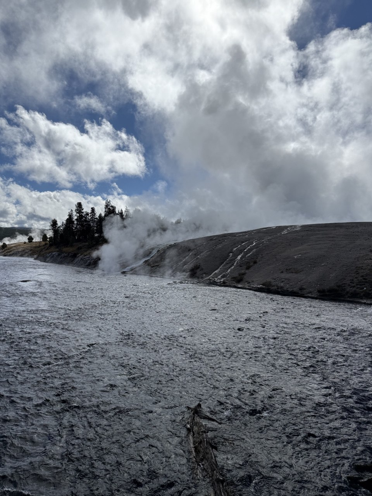
Set 2 (Left)
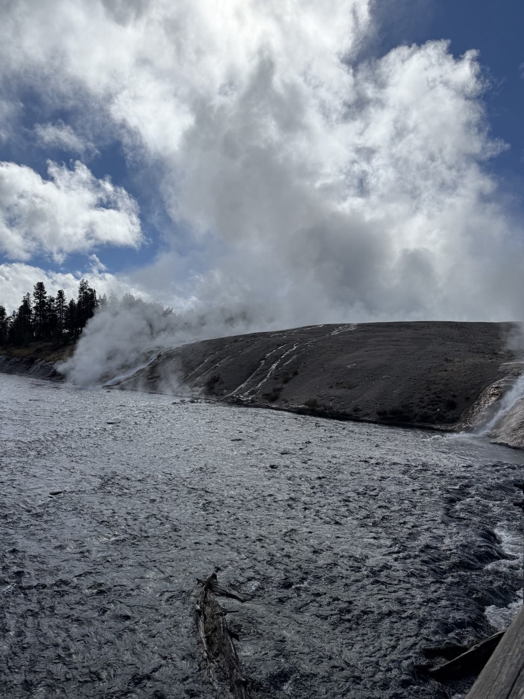
Set 2 (Middle)
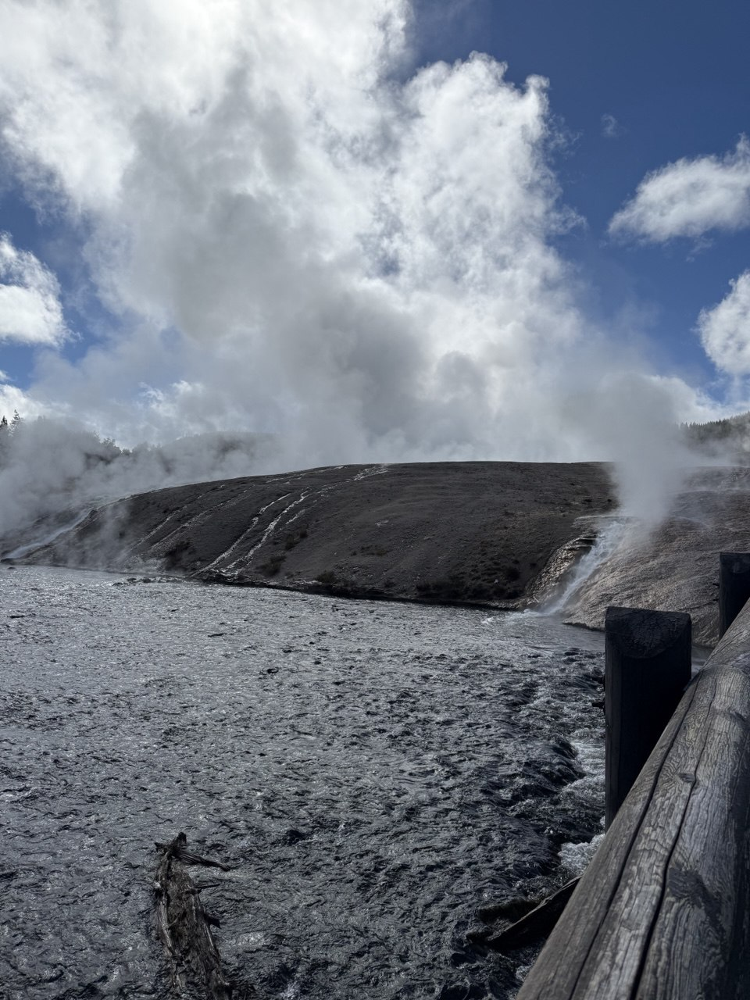
Set 2 (Right)
Part A.2: Recover Homographies
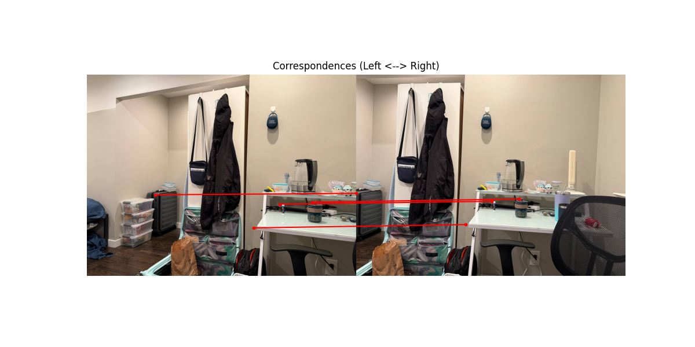
Visual of the Correspondences mapped to each other on test left and right images
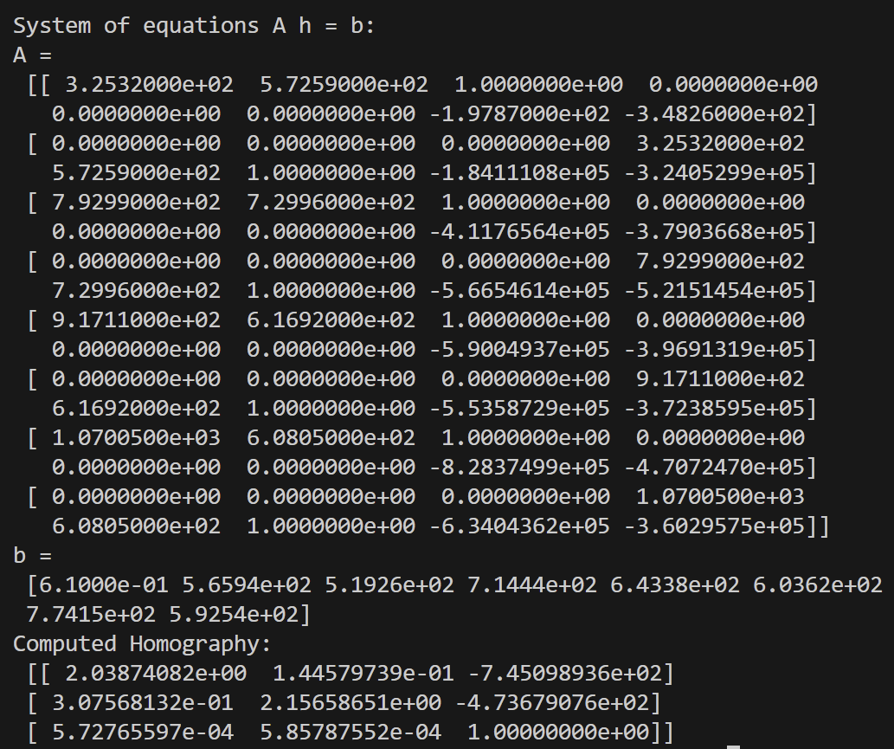
Screenshot of the System of Equations and the Resultant Homography
Part A.3: Warp the Images
In this part, I tested my computed homeographies on both a square and a rectangular object. As we can
see, both the Nearest Neighbour and Bilinear interpolation methods work well, but the Bilinear method
results in a smoother image with less sharp edges. However, the Bilinear method is more computationally
intensive. For the purposes of the test images, it seems that Nearest Neighbour is sufficient. However,
perhaps for higher quality images, Bilinear would be preferred.
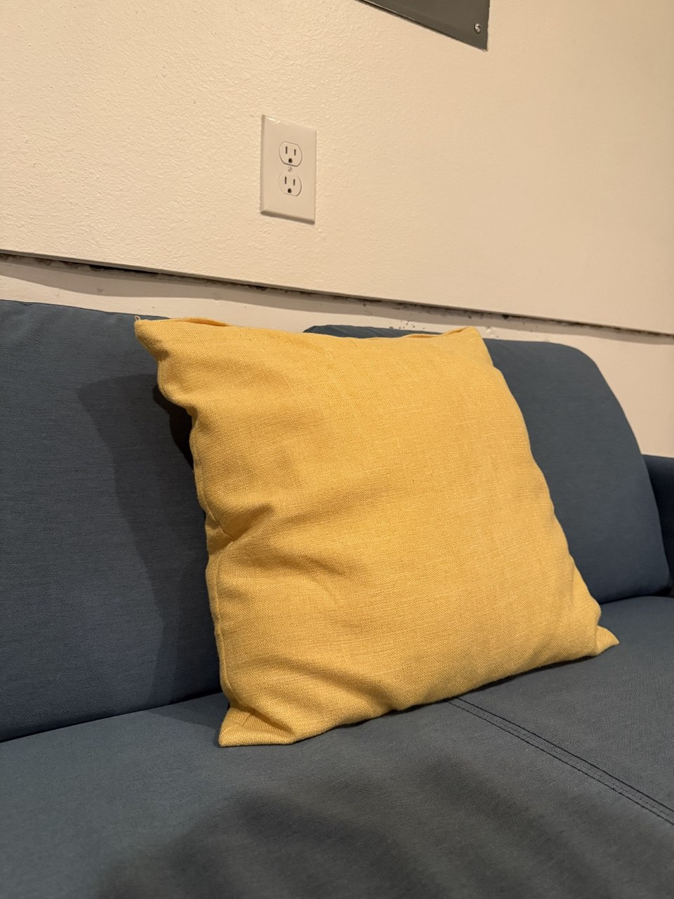
Original Image
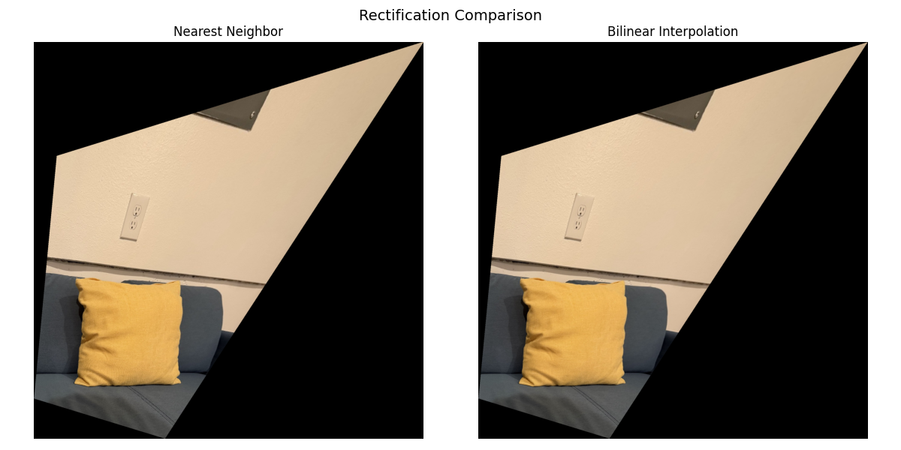
Rectified Image (NCC and Bilinear) - Square Object
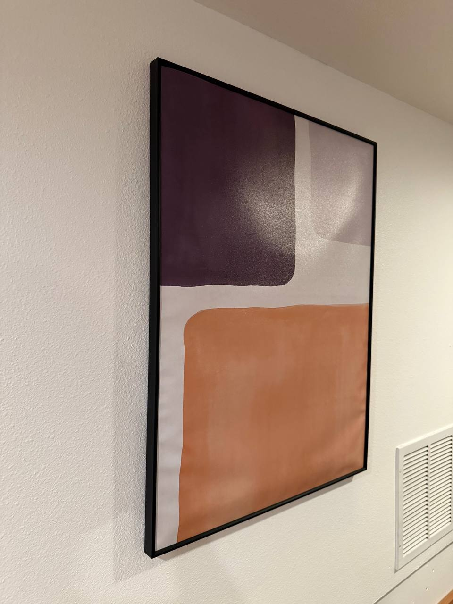
Original Image
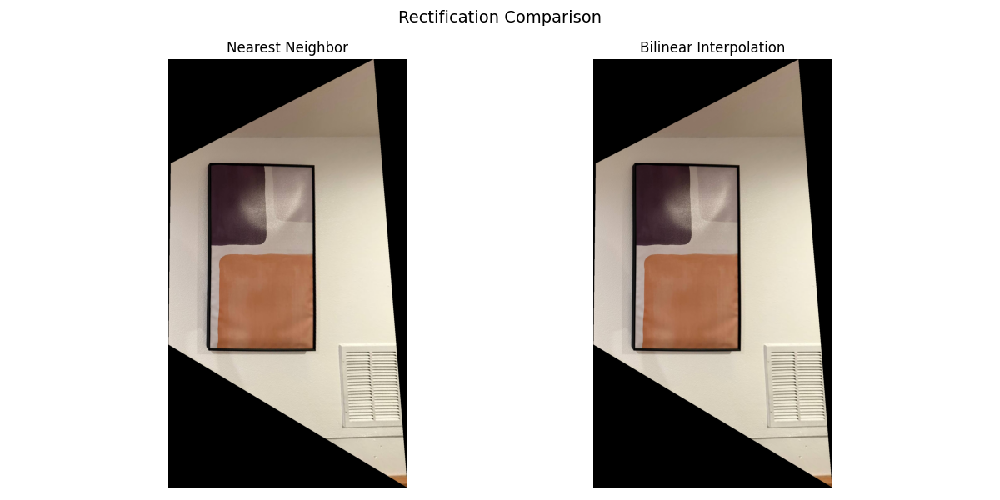
Rectified Image (NCC and Bilinear) - Rectangular Object
Part A.4: Blend the Images into a Mosaic
In this part, I wanted to create a mosaic using 3 images. To achieve this, I used the one shot method
to compute the homographies between the left-middle and middle-right image pairs, keeping the middle image
as the reference frame. I then warped the left and right images into the middle image's frame of reference.
Finally, I blended the three images together. However, trialling with the alpha mask to have a drop-off
from the center to the edges did not work well, as it resulted in a very blurry image in the overlap regions.
Instead, I chose to use a Winner Takes All approach and hybridized it with the alpha mask. In this approach,
I used a Gaussian filter to smooth the edges of the Winner Takes All mask, effectively
blending near the edges of the Winner Takes All regions, resulting in much better and cleaner mosaics.
I suspect it could also be a result of movement in my images, as the pictures in Yellowstone have
geysers with moving steam.
Image (Left)
Image (Middle)
Image (Right)
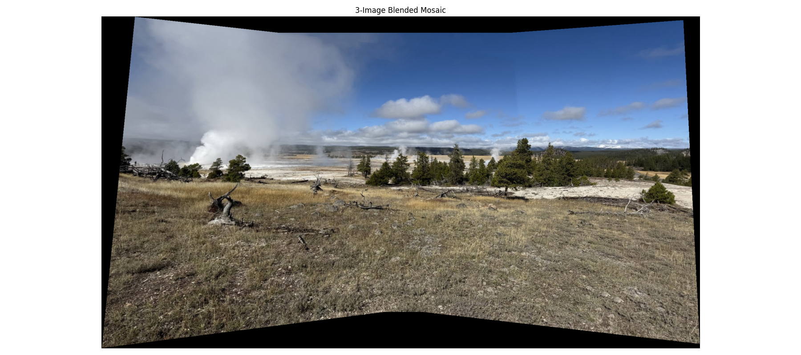
Final Mosaic
Image (Left)
Image (Middle)
Image (Right)
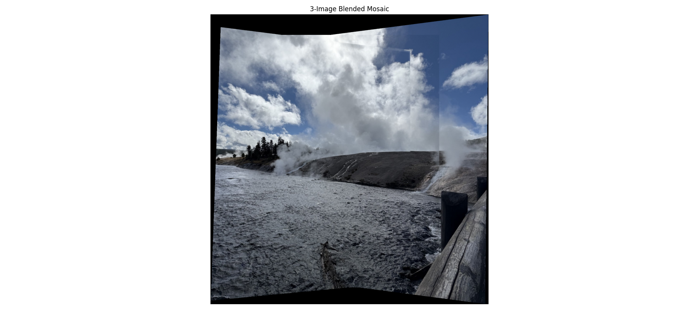
Final Mosaic
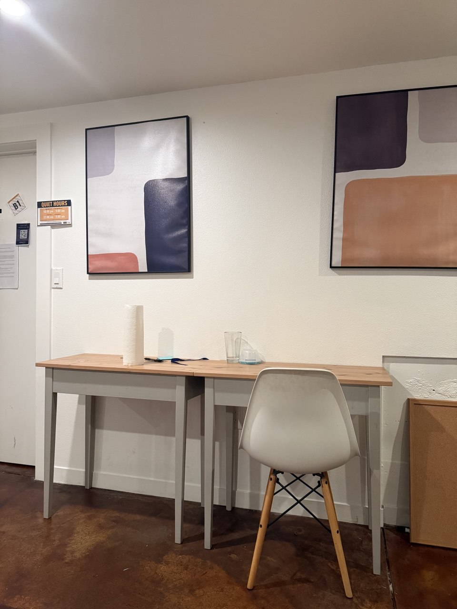
Image (Left)
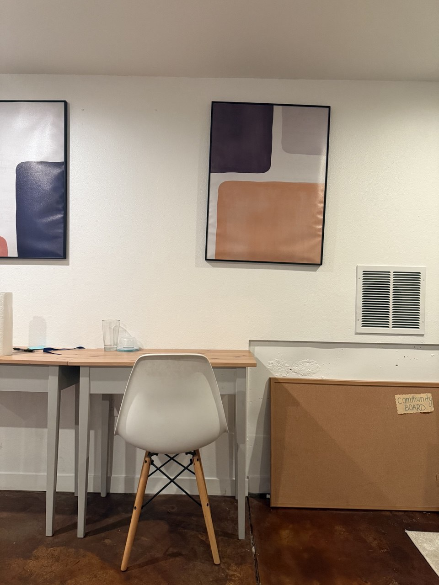
Image (Middle)
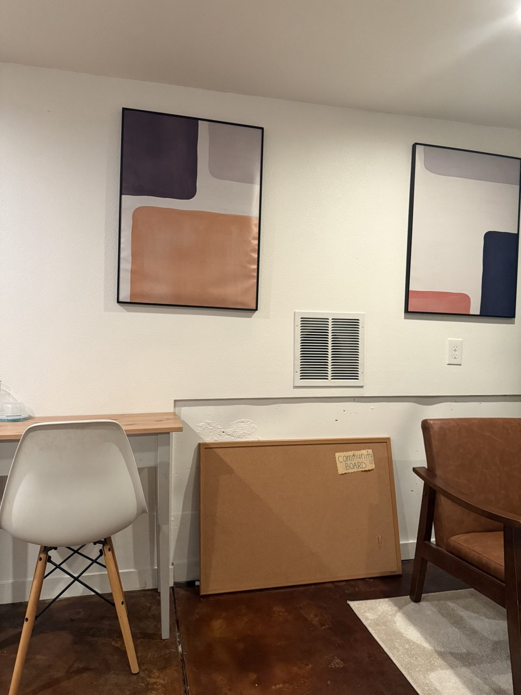
Image (Right)
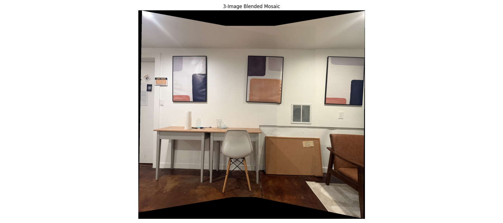
Final Mosaic
Part B.1: Harris Corner Detection
For this section, I wanted to be able to choose correspondences automatically. To do this, I first needed
to detect points of interest in the image. Based on what I learned in class and the sample given, I used
the Harris Corner Detection method. This method works by measuring the change in intensity for small shifts
in different directions. Corners are identified as points where there is a significant change in intensity
in all directions. Since it is computationally expensive to calculate all eigenvalues which would signify
the intensity of change, the Harris Corner method uses the determinant and trace of the second moment matrix
as an approximation (which I did not implement here as the sample code was given).
After detecting corners using the Harris method, I got a large number of corners, consisting of many clusters
of points. However, for accuracy and efficiency, I wanted to reduce the number of corners to a smaller set
of well-distributed points. In order to acheive this, based on the paper, I will use Adaptive
Non-Maximal Suppression (ANMS). According to the paper, ANMS works by selecting corners based on their
strength, and suppresses corners that are close to stronger corners. This can be seen from the equation given,
where for each corner, I find the minimum distance to a corner with a higher corner response value. This can
be controlled by the c_robust parameter, which determines how much stronger a corner must be to suppress
another corner. In my implementation, I set c_robust to 0.9. So response(i) < c_robust * response(j), meaning
corner j must be stronger than corner i to surpress it. I then sorted by surpression radius and selected the
top 500 corners, resulting in a much more evenly distributed set of corners as can be seen.
*I had to limit the inital Harris corners to 2000 as my computer was running out of memory.
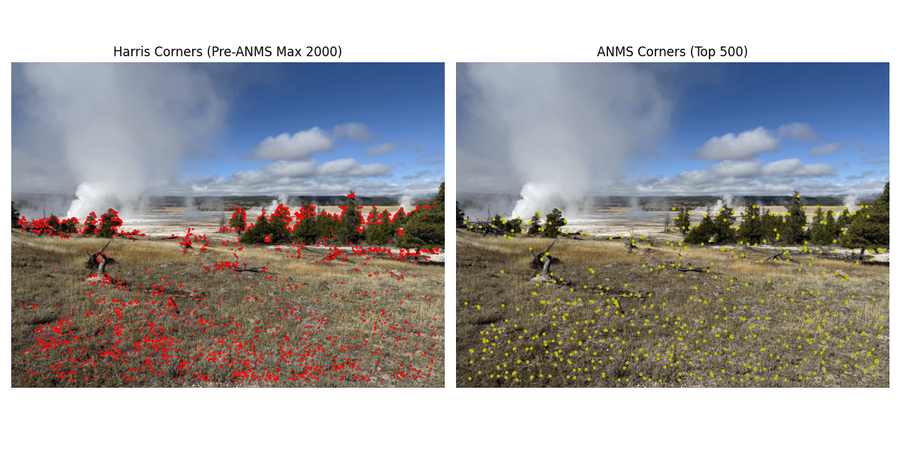
Harris Corners before and after ANMS
Part B.2: Feature Descriptor Extractor
In this next part, we want to extract feature descriptors from the corners detected in the previous section
so that we can perform feature matching later on. In order to achieve this, for each corner after ANMS,
I took a 40x40 patch and applied a 7x7 Gaussian filter with sigma 2 to reduce aliasing. I then downsampled
using inverse mapping and bilinear interpolation to get a 8x8 patch. Finally, I normalized the patch by
subtracting the mean and dividing by the standard deviation, this ensures that there is no bias and gain as
the feature descriptor is based on relative intensity changes and not affected by changes in lighting
between images. I then flattened the 8x8 patch to allow for easier comparison later on. I showcased the first
20 feature descriptors extracted from the corners detected in the previous section.
* For points at the edges, as a 20x20 patch cannot be extracted, I simply ignored those points.
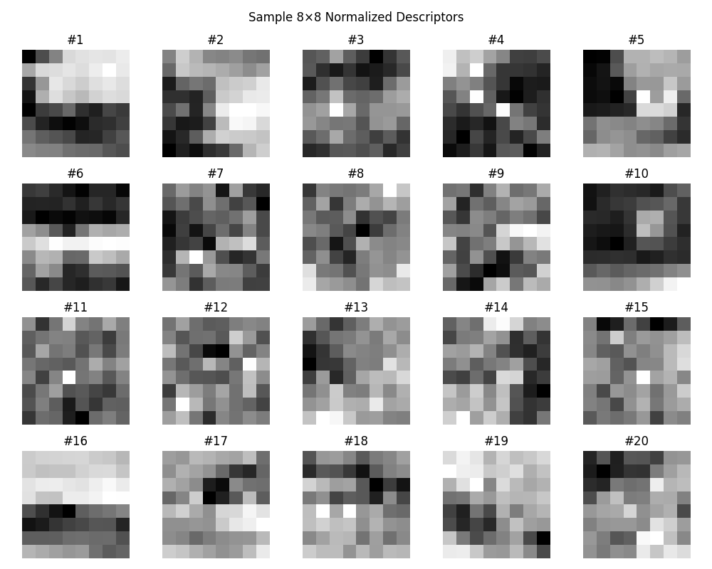
First 20 Feature Descriptors
Part B.3: Feature Matching
Feature matching is the next step and works on a simple concept. For each feature descriptor in image 1,
we compute the SSD (Sum of Squared Differences) with all feature descriptors in image 2. Then,
if it is similar to the feature descriptor in image 2, then they are likely to be corresponding points.
However, simply doing this direct matching can lead to many false positives, as some features may be similar,
such as in my example image where the grass patches look similar. Thus, based on the strategy in the paper,
we implemented Lowe's thresholding ratio test, comparing the ratio between the best and second best match.
If the ratio is below the threshold (I chose 0.5 as based on the paper, this maintains essentially only good
matches), then the match is accepted. Even though in the paper they had an even better result by using the
ratio of best to the average of second best across several images, the assignment only required the simpler
method, so I stuck with that.
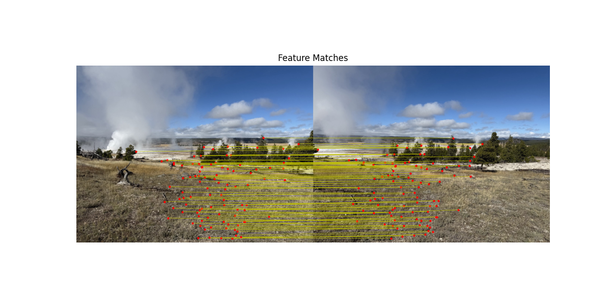
Features mapped between the left and middle image
Part B.4: RANSAC for Robust Homography
Now that I have the matched feature points, I can use them to compute the homography between the two images.
However, there could be outliers due to false matches in the previous step, especially in my example image
where the grass patches could be similar. Thus, I implement RANSAC to get a more robust homography estimate.
The RANSAC algorithm works as such:
1. Randomly choose a sample of 4 points from the matches
2. Compute the homography from these 4 points
3. Based on this homography, compute how many of total matches are inliers (based on the tolerance
threshold, I set it as 3.0, so if the error is within 3 pixels, it is an inlier)
4. Repeat for a set number of iterations (I set it to 2000)
5. Choose the homography with the most inliers as the best estimate
6. Recompute the homography using all inliers to get the final homography
After implementing RANSAC, I then used this automatic correspondence selection to calculate the
homographies and combined it with my previous mosaicing code to automatically create mosaics from the
image sets. Below are the results comparing manually selected correspondences vs automatically selected
correspondences using RANSAC.
As can be seen, the automatically selected correspondences using RANSAC produce mosaics that are actually
better than the manually selected correspondences! It also runs much more efficiently as I do not have to
manually select points. This could be due to the human error when selecting the points manually with my
cursor.
Manually Selected Correspondences (Sample 1)
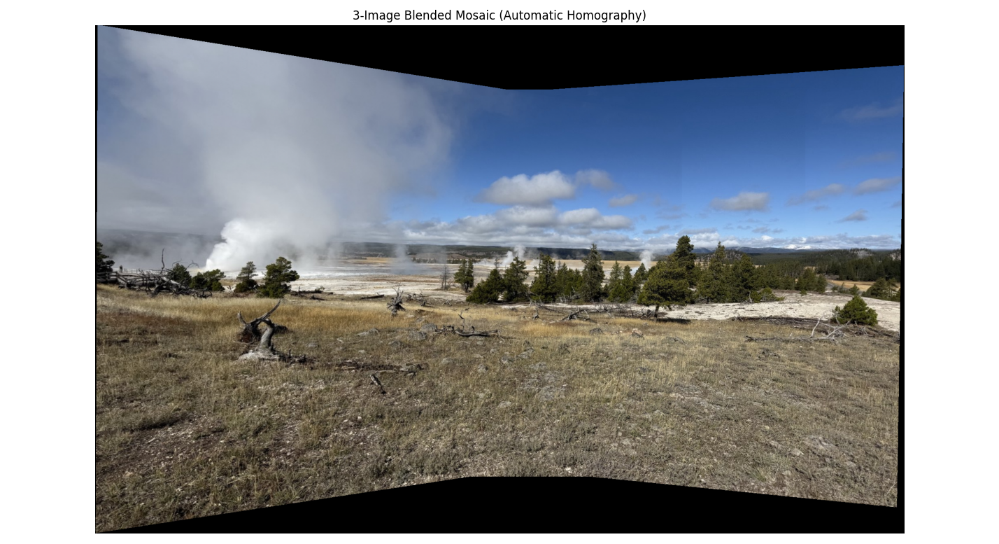
Automatically Selected Correspondences (Sample 1)
Manually Selected Correspondences (Sample 2)
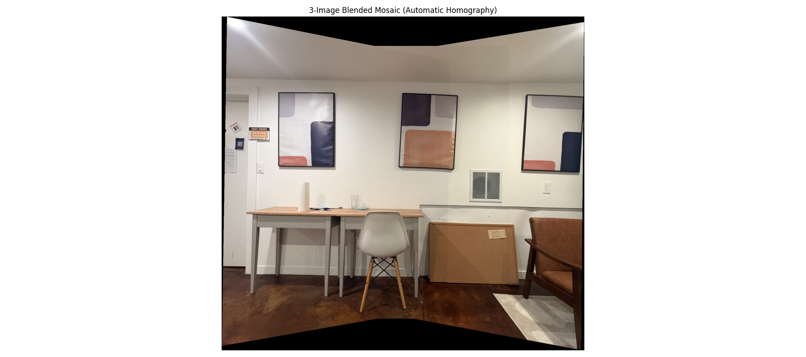
Automatically Selected Correspondences (Sample 2)
Manually Selected Correspondences (Sample 3)
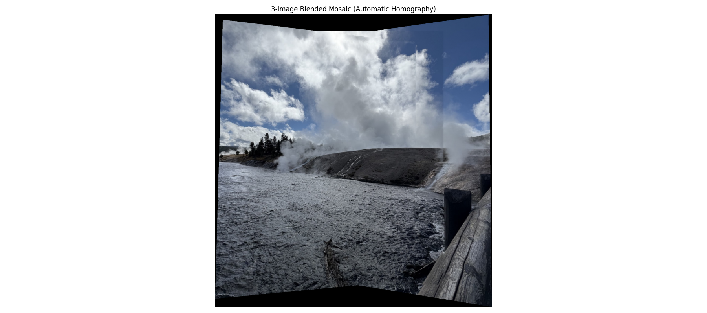
Automatically Selected Correspondences (Sample 3)